最近、Matlabを使って様々な異なるモデルの3次元データのシミュレーション実験を行いました。多くは3次元データのフィッティングが必要です。Matlabにはフィッティングツールボックス（cftool）が付属しており、確かに強力で、ツールボックスを使ったデータフィッティングは手間が省けます。データセットが十分な元のモデルに対しては、cftoolは私たちが望む結果を非常に正確にフィッティングできます。もちろん、Matlabの話はしません。この記事は全体を通してMatlabとは全く関係ありません。~~話が多くなりましたが、以下始めます。
一、データ原型
まず完全なデータテーブルをインポートします。これは y=9、x=15 で、サイズが9x15の行列です。行列の各要素は数値zに対応しています。2番目の図は、1番目の図のデータから対応する位置のデータを選び出したものです。サイズは3x5の有効行列です。
こうして、元のデータから欠損度が約90%にも達するデータを仮想的に作り出しました。後の補間フィッティングは、この欠損データに対して対応する計算を行います。
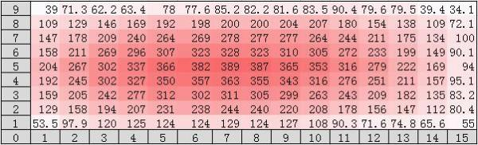
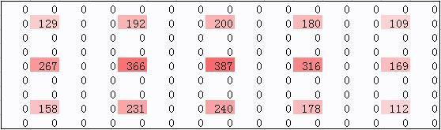
二、補間フィッティング
1、概念の導入
2つの数（129 192）が与えられたとき、この2つの数の間に線形に1つの値を挿入することを考えます。挿入方法は実に様々です。例えば、2次元平面での線形補間なら B2 =（A1+A2）/2、あるいは3次元空間での線形補間など、以下のように使います。
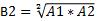
A： 192 129
B ：192 157 129
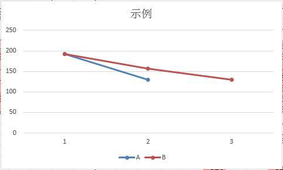
2、一次フィッティング
上記の概念の導入を経て、次に欠損データに対して一次補間を行います。以下の式を参照してください。
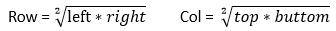
黒枠は有効な頂点データです。アルゴリズムで任意の2つの頂点を走査し、そのうち少なくとも1つが有効データ（黒枠）であれば、1つのデータ（青枠のデータ）を挿入します。これは非常に重要です。非常に重要なので三回言います。例えば、行方向で隣接する129と192の2つの頂点には157を内挿し、129と267の隣接する2つの頂点には186を内挿します。結果は下図のようになります。
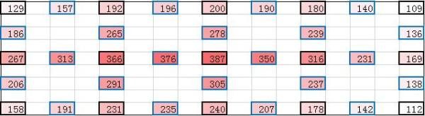
一次内挿はこれで完了でしょうか？ いいえ、上記のデータをもう一度見てください。最初のラウンドの挿入後、新たに隣接する頂点が追加されるため、さらに内挿が必要です。私のデータ行列は大きくないので、2ラウンド目の挿入後、隣接する空白点はもう見つかりません。データ行列が非常に大きい場合、アルゴリズムの実装では、この時点でコードを再帰形式で書き、挿入が完了するまでスタックをポップしません（結果は以下の通り）。
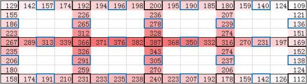
>3、二次フィッティング
我々の二次フィッティングは、完全に一次フィッティングの結果に基づいて調整されます。私の二次設計では、4つの有効な頂点（黒枠が有効頂点です。重要なことなので一度だけ言います）を使って、緑枠のデータを1つ内挿します。ADが対角、BCが対角です。以下の式を参照してください。
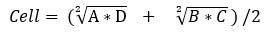
注：挿入後は一次フィッティングを実行しません。一次フィッティングは黒枠データを必要としますが、任意の2つの青・緑データは必要ありません。
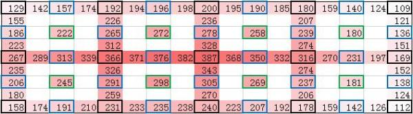
見やすくするために、一次フィッティングの内容を取り除きました。一次フィッティングの結果が以下のモデルでない場合、モデル変換が必要です。具体的な方法は自分で考えてみるか、私にコメントを残してください（核心部分は個別に連絡してください）。
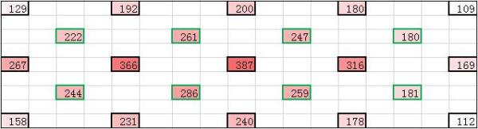
4、三次フィッティング
三次補間は二次補間と基本的に同じです。唯一異なる点は、任意の4つの頂点（黒枠かどうかにかかわらず）に対して、上記の式を参照して挿入することです。すると2番目の図が得られます。
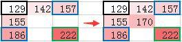
5、補助点の削除
最後にお伝えします。上記で、黒枠のものだけが有効データであり、他の色の枠のものは補助データです。これは幾何学の問題を解くときに引く補助線に似ています。では、これを削除しましょう。削除後の結果は以下の通りです。
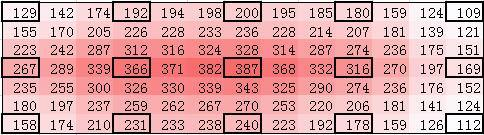
6、データ原型との偏差比較
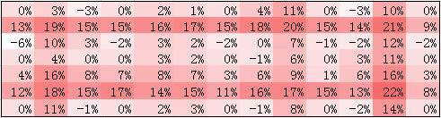
平均偏差7%、最大偏差22%であり、比較的フィッティング精度は良好です。私が持っているデータはわずか10%で、90%のデータをフィッティングする必要があることを忘れないでください。
7、結果出力
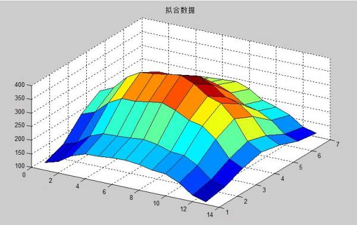
8、まとめ
95%の時間は方法を考え、5%の時間で方法をコードに書く。この記事を読めば、曲面フィッティングは簡単にマスターできるのではないでしょうか？
（このアルゴリズムは対称で規則的なモデルに基づいています。不規則なモデルへの適応性はまだ試していません）。立ち去る前に「いいね」をお願いします！
著者：showlo
リンク：https://zhuanlan.zhihu.com/p/24275757
出典：知乎